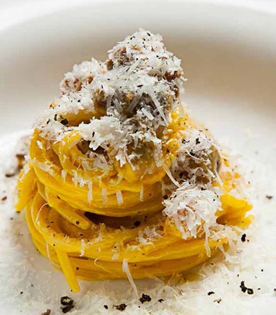

Spaghetti Carbonara!

Spaghetti carbonara (spaghetti alla carbonara in Italian, pronounce: spa-GET-tie alla KAR-boh-NAA-rah) is a main course consisting of spaghetti (long thin strands of pasta) in a creamy sauce of eggs, bacon, cheese and black pepper.(
The history of spaghetti carbonara is short; the dish only appeared in cookbooks for the first time in the 1950s-60s. The origin of the dish is shrouded in mystery and there are many different stories. It is thought that the dish comes from Rome, but that idea seems to be a little controversial.
One of the most persistent stories claims that the carbonara gets its name from coal miners (carbonari). The grains of black pepper being a reference to the coal dust. It could also be that the dish was invented by a miner who opened the restaurant La Carbonara in Rome in 1912. (The restaurant itself denies this story, although they do have spaghetti carbonara on the menu). According to yet another version, it was American soldiers in the Second World War who brought the beloved combination ‘bacon & eggs’ from their homeland and thus inspired the spaghetti carbonara.
Ingredients:
240g of Spaghetti or Spaghettoni
30g of Pecorino Romano cheese
30g of Grana Padano cheese
4 egg yolks
200g of Guanciale or Pancetta if you can't find Guanciale
Salt and cracked black pepper
How to do it
- First fill a pot with water and a tablespoon of salt and put it into a boil and let the spaghetti cook for about 10 to 12 minutes in the boiling water, or as your spaghetti package says so
- After putting the spaghetti in the water it's time to cook the Guanciale(bacon from the cheek of the pork), put the 200g of Guanciale in a pan and let it cook until cripy on the outside, for about 3 to 4 minutes, reserve the fat rendered from the guanciale
- Now it's time to start the sauce, in a bowl mix the 4 egg yolks with de Pecorino Romano and Grana Padano cheese and whisk it hard, now use the fat that we reserverd in the previous step and mix with the egg yolks and the cheese, making a kind of hollandaise sauce
- Put the spaghetti still hot from the boiling into the sauce with a little of pasta water and star mixing it in a double boiler to cook the egg and make that creamy sauce we all want!